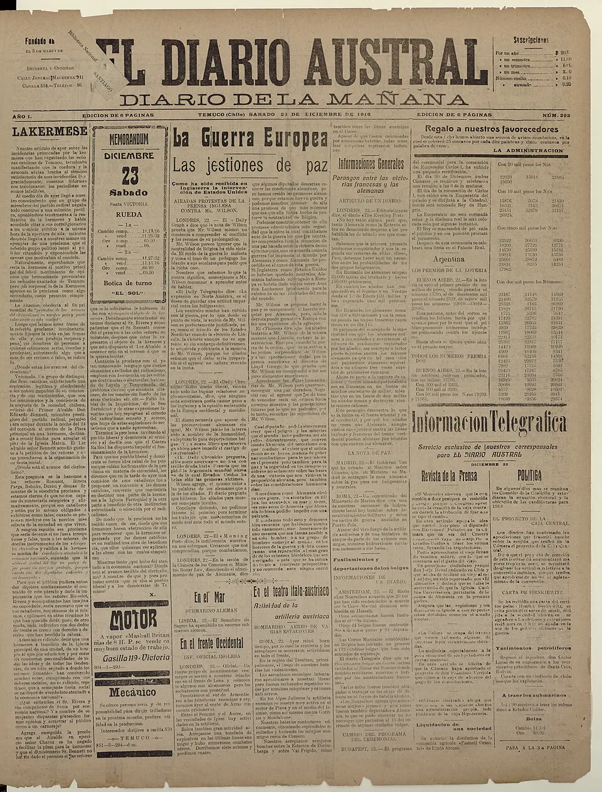

Movimiento mapuche del siglo XX

Tras la Ocupación de la Araucanía, el Estado radicó a las comunidades mapuche en reducciones, con títulos de merced que les dejaron una fracción de su territorio. A comienzos del siglo XX, además, las tierras de más de doscientas comunidades fueron usurpadas y legalizadas en notarías y conservadores. En ese contexto, una generación de mapuche formados en escuelas misionales y fiscales creó las primeras organizaciones modernas. En 1910, Manuel Manquilef y otros dirigentes fundaron la Sociedad Caupolicán Defensora de la Araucanía. Poco después surgió la Federación Araucana, encabezada por Manuel Aburto Panguilef, que defendió la tierra comunitaria, la lengua y las tradiciones, y desde 1919 se reunieron congresos araucanos.
El movimiento también llegó al Congreso Nacional: Francisco Melivilu fue elegido diputado en 1924, el primero de origen indígena, y Manquilef lo fue en 1926. El gran debate fue entre «divisionistas» y «comunitaristas». Manquilef impulsó la Ley 4.169, promulgada el 24 de agosto de 1927, que permitía dividir las comunidades en hijuelas individuales; creía que convertir a los mapuche en propietarios resolvería su pobreza. Aburto Panguilef y la Federación Araucana sostenían, en cambio, que sin tierra comunitaria la cultura no podía sobrevivir. La ley fue reemplazada en 1930 por la Ley 4.802, que creó los Juzgados de Indios.
En 1938, Venancio Coñuepán, que había presidido la Sociedad Caupolicán, fundó la Corporación Araucana. Fue diputado desde 1945, ministro de Tierras y Colonización entre 1952 y 1953 y director, entre 1953 y 1961, de la Dirección de Asuntos Indígenas, la primera institución pública dedicada a los pueblos indígenas. Durante la Reforma Agraria, organizaciones reunidas en el Congreso de Ercilla (1968) concluyeron que no existía un camino legal para recuperar tierras e iniciaron ocupaciones. En 1972, la Ley 17.729 creó el Instituto de Desarrollo Indígena. Tras el Golpe de Estado de 1973, el Decreto Ley 2.568, promulgado en marzo de 1979, impulsó la división de las tierras comunitarias para crear un mercado de tierras.
Los historiadores discuten si este movimiento buscó sobre todo la integración o la autonomía; en la práctica convivieron ambas corrientes. El historiador Pablo Marimán ha descrito las reducciones como «la expresión más fidedigna de la acción colonial del Estado de Chile». Las demandas de restitución y reconocimiento de estas organizaciones desembocaron, tras el retorno a la democracia, en la Ley Indígena de 1993.
Versión para niños
Después de perder gran parte de sus tierras, el pueblo mapuche no se quedó callado. En 1910, un grupo de mapuche fundó la Sociedad Caupolicán para defender sus derechos. Luego nacieron otras organizaciones, con profesores, lonkos y diputados. Escribían cartas al presidente, se reunían en grandes congresos y publicaban en los diarios. No todos pensaban igual: algunos querían dividir las tierras de las comunidades y otros querían conservarlas juntas. Gracias a su esfuerzo, la lengua y la cultura mapuche siguieron vivas.
Para maestros
Nivel sugerido: 2° medio
Objetivo: Reconocer al pueblo mapuche como actor político del siglo XX, que se organizó, debatió y negoció con el Estado, y no solo como un pueblo del pasado. La fecha 1910 corresponde a la fundación de la Sociedad Caupolicán; el rango cierra con el decreto de 1979.
Preguntas para la clase:
- ¿Qué problemas enfrentaban las comunidades mapuche después de las reducciones?
- ¿Qué argumentos tenían los «divisionistas» y los «comunitaristas»?
- ¿Por qué crees que dirigentes mapuche decidieron participar en el Congreso Nacional?
Actividad (20–30 min): En parejas, los estudiantes leen el segundo párrafo de esta nota y escriben dos breves discursos de un minuto: uno a favor de dividir las comunidades (como Manquilef) y otro a favor de conservarlas (como Aburto Panguilef). Luego observan la imagen, una página de diario de 1916 con un discurso de Manquilef, y comentan qué nos dice que la prensa de Temuco publicara la voz de un dirigente mapuche. Cierre: ubicar en la línea de tiempo del sitio los hitos 1910, 1927, 1938, 1968, 1979 y 1993.
Fuentes sugeridas: Memoria Chilena; Biblioteca del Congreso Nacional (BCN); Museo Regional de la Araucanía.
Objetivos de Aprendizaje (Currículum Nacional)
- 1° medio · HI1M OA 14 Explicar que la ocupación de la Araucanía fue una política de Estado … la repartición de tierras y la reubicación de la población mapuche en reducciones
- 1° medio · HI1M OA 24 Evaluar … las relaciones de conflicto y convivencia con los pueblos indígenas (aymara, colla, rapa nui, mapuche, quechua, atacameño, kawéskar, yagán, diaguita)
- 3° o 4° medio (Chile y la región latinoamericana) · FG-CHLA-3y4-OAC-04 Analizar … el presente de distintos pueblos indígenas de Chile y Latinoamérica … los avances y desafíos en su relación con los Estados nacionales
Fuentes
- Memoria Chilena — El movimiento mapuche y el Estado en el siglo XX
- Memoria Chilena — Reducciones y radicaciones de comunidades mapuche
- Memoria Chilena — Ley de División de Comunidades Indígenas (1927)
- Memoria Chilena — Manuel Segundo Manquilef González (1887-1950)
- Biblioteca del Congreso Nacional — Reseña biográfica de Venancio Coñuepán Huenchual
- Biblioteca del Congreso Nacional — Decreto Ley 2.568 (1979)
Revisión humana pendiente. Cómo se revisa · Reportar un error
Cómo citar: Historia de Chile. (2026). Movimiento mapuche del siglo XX. En Historia de Chile: atlas y línea de tiempo. https://moises-salgado.github.io/historia-de-chile/momento/movimiento-mapuche-del-siglo-xx.html